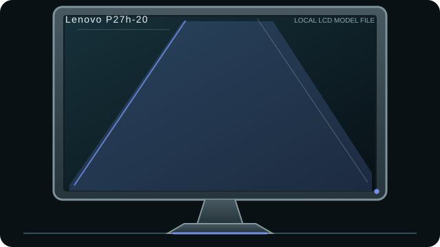

[ INDIVIDUAL COMPONENT // DISPLAYS ]
Lenovo ThinkVision P27h-20
27-inch QHD IPS office monitor with USB-C power delivery, Ethernet pass-through and DisplayPort daisy-chain support.

IDENTIFICATION: Match the complete model and regional suffix on the rear label. This record summarizes published specifications; it is not a substitute for the exact unit manual, cable requirements or physical condition check.
Specifications
| Catalog subcategory | LCD displays |
|---|---|
| Exact product / family | Lenovo ThinkVision P27h-20 |
| Panel and native resolution | 27-inch IPS LCD, 2560 × 1440 (16:9) |
| Native timing | 2560 × 1440 at up to 60 Hz |
| Inputs / companion ports | USB-C with DisplayPort 1.2 Alt Mode and up to 90 W PD, HDMI 1.4, DisplayPort 1.2 in/out; USB hub and RJ-45 pass-through |
| Revision and model distinction | Check the product number and region in Lenovo PSREF: configurations/bundles can differ. The 90 W power figure is a maximum supported delivery, not guaranteed host charge rate. Confirm firmware, cable rating and host power budget. |
Host compatibility and connection notes
USB-C video requires a host port that supports DisplayPort Alt Mode; charging requires the host/charger to negotiate USB-C Power Delivery. DP daisy-chain needs host MST support. Ethernet pass-through and USB functions require the appropriate upstream connection and host support.
HDMI 1.4 and DP/USB-C have different bandwidth ceilings. For QHD at 60 Hz and full feature operation, use a suitable certified cable and verify that the host/GPU supports the desired color depth and concurrent USB-C power/data/video load.
Preservation notes
Record the rear-label model, serial/date code, included stand/accessories, tested input, source timing, image condition and calibration state. Keep the matching manual and cable/adaptor chain with the unit; use qualified service procedures for internal work.
Manufacturer documentation and sources
- Lenovo PSREF — ThinkVision P27h-20 specifications (PDF)Lenovo Product Specifications Reference for ports, resolution and power delivery.
- Lenovo PSREF — ThinkVision P27h-20 product entryManufacturer model reference; check the exact regional product number.